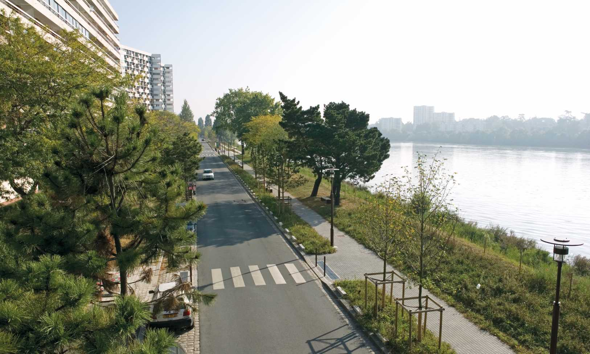

Survolez l'image et agrandissez/réduisez la vue à l'aide de la molette.
Budget: 4 455 000 € HT
Surface: 32 400 m²
Date début: 2005
Date fin: 2007
Maîtrise d'ouvrage: Nantes Métropole
Co-traitant(s): bureau des paysages
Description:
Le long des berges, le projet s’inscrit dans la continuité d’un parc linéaire qui se décline selon les
spécificités du territoire. Le vocabulaire mis en place dans l’île de Nantes permet de fixer un niveau
d’intervention économique et esthétique qui se modifie en intégrant les traces laissées par l’histoire
et la topographie de chaque lieu. Aux abords du centre commercial, il s’agit d’accompagner la
transformation entreprise par le centre, pour clarifier les modes de fonctionnement du quartier, pour
l’ouvrir sur le fleuve en valorisant les berges et faire “pénétrer” les rives de Loire dans l’épaisseur
du territoire.
L’emprise des chaussées est diminuée afin d’augmenter les largeurs des trottoirs et de
retrouver des descentes en gradin vers la Loire. Ainsi, sur les rues Sébilleau et Zamenhof, des mails
plantés sont réalisés sur les emprises de chaussée, la circulation étant réduite de quatre à deux
voies. Une promenade haute est aménagée le long du boulevard Blancho. Des liaisons accessibles
aux personnes à mobilité réduite sont réalisées pour descendre vers une promenade basse de bord
de Loire.
Tirant parti de la conservation d’arbres existants, des bastions sont créés, offrant des
points de vue hauts sur le fleuve. L’enjeu est ici de transformer un équipement de périphérie en un
équipement du nouveau centre, le rendant perméable aux circulations, l’articulant avec le réseau
des espaces publics et le faisant participer à la vie de l’île.
{kind=link}
{kind=link}
{kind=link}
{kind=link}